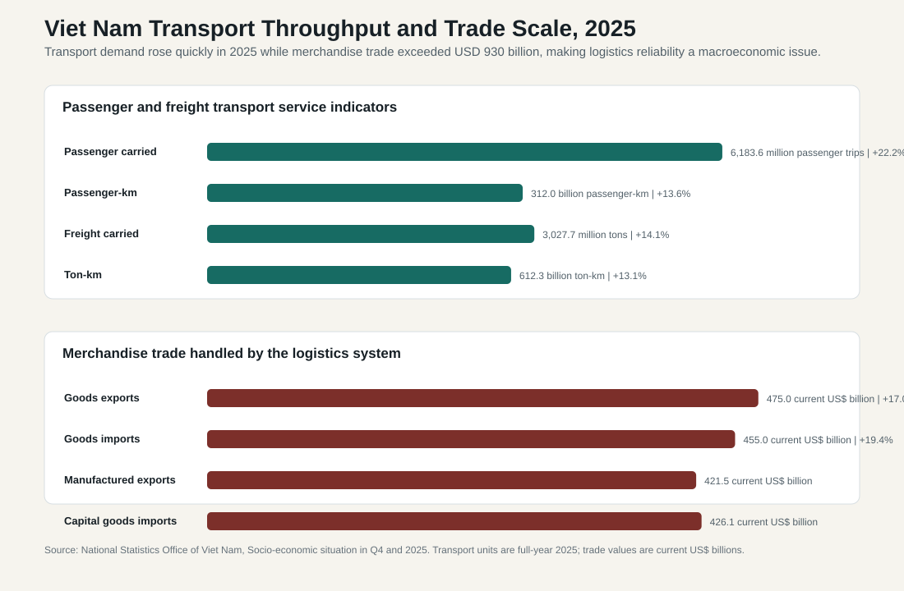
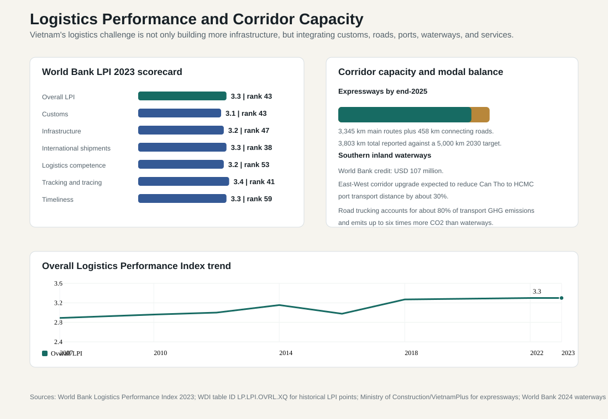
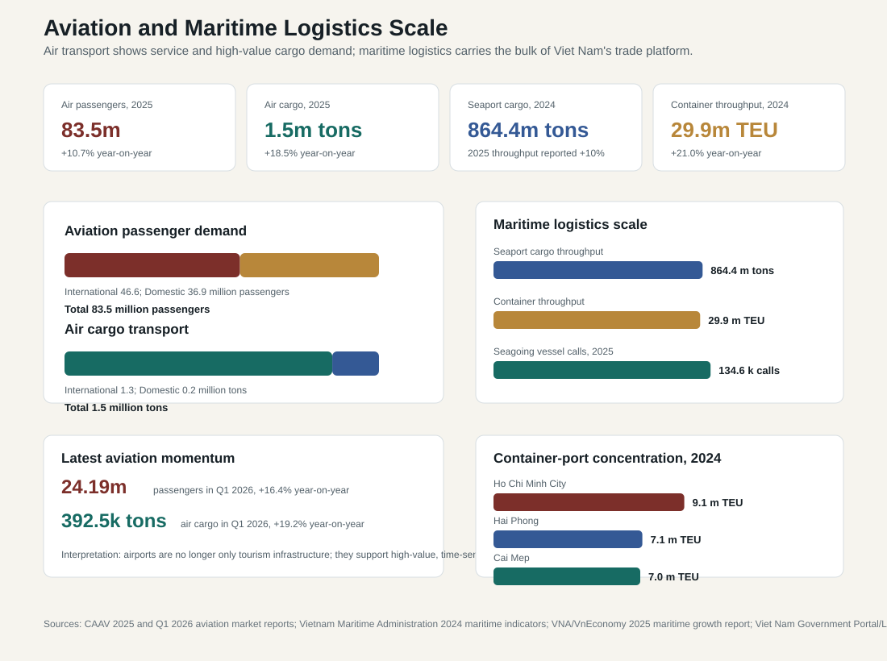

11.2 Transport, Logistics, and Corridors
ASEAN comparative lens (2026). Vietnam should be read in ASEAN comparison as ASEAN's most prominent party-led, export-manufacturing upgrading case. Unlike the Philippines' service-remittance profile, Thailand's older industrial-tourism base, Malaysia's resource-industrial federal structure, or Indonesia's archipelagic domestic-market scale, Vietnam's comparative issue is how a socialist party-state manages very open global production networks. For this section, the regional comparison should compare electricity, transport, logistics, ports, corridors, broadband, and climate resilience as regional connectivity and state-reach systems. Local comparable indicators show: population 100.99 million (2024), rank 3 among the nine ASEAN reports in this workspace; GDP US$476.39 billion (2024), rank 4 among the nine ASEAN reports in this workspace; GDP per capita US$4,717 (2024), rank 5 among the nine ASEAN reports in this workspace; real GDP growth 7.09% (2024), rank 1 among the nine ASEAN reports in this workspace; government effectiveness 0.09 (2023), rank 6 among the nine ASEAN reports in this workspace; internet use 84.15% (2024), rank 4 among the nine ASEAN reports in this workspace. Use `sources/documents/regional/asean_comparative_lens_2026.md` together with ASEANstats, ASEAN Secretariat materials, and the country processed-indicator files before making cross-ASEAN claims.
Viet Nam's transport and logistics system is a central condition of its development model. Export-led industrialization depends on whether factories, farms, warehouses, ports, airports, border gates, customs systems, and urban markets are connected reliably. Transport infrastructure is therefore not only a physical asset. It is a productivity system and a state-capacity test.
The key analytical question is whether Viet Nam is moving from infrastructure expansion to logistics integration. The country is building expressways, ports, airports, inland waterways, and rail plans at speed. But logistics competitiveness depends not only on kilometers of road or port capacity. It also depends on customs clearance, multimodal transfer, digital documentation, warehousing, cold chains, land access, driver and safety regulation, competition in logistics services, and coordination between central ministries and provinces.

11.2.1 Transport Demand in 2025: Mobility and Freight Are Rising Quickly
The 2025 government statistics show why transport must be treated as a macroeconomic issue. NSO reported that in 2025 passenger carried reached 6,183.6 million passenger trips, up 22.2 percent year-on-year, while passenger traffic reached 312.0 billion passenger-kilometers, up 13.6 percent. Freight carried reached 3,027.7 million tons, up 14.1 percent, and freight traffic reached 612.3 billion ton-kilometers, up 13.1 percent.
These figures indicate both recovery and pressure. Passenger growth reflects tourism, urban mobility, interprovincial travel, household income growth, and service-sector expansion. Freight growth reflects manufacturing, construction, retail distribution, agricultural and aquaculture movement, and import-intensive export production. A system moving more than three billion tons of freight in a year cannot be governed only through road building; it requires corridor management, loading standards, warehousing, ports, logistics firms, safety enforcement, and digital tracking.
The difference between freight carried and freight traffic also matters. Freight carried measures tons; freight traffic measures ton-kilometers. When both rise strongly, the system is handling more than local movement. It is also carrying goods across longer distances or through more intensive transport chains. That is exactly what happens in an economy where production is spread across industrial zones, ports, border provinces, deltas, and metropolitan markets.
11.2.2 Trade Scale: Logistics as the Physical Base of Export-Led Growth
The trade statistics make the logistics challenge even clearer. NSO reported goods exports of USD 475.04 billion in 2025, up 17.0 percent, and goods imports of USD 455.01 billion, up 19.4 percent. Total merchandise trade therefore reached about USD 930.05 billion. Manufactured products accounted for USD 421.47 billion, or 88.7 percent of goods exports. Capital goods accounted for USD 426.11 billion, or 93.6 percent of imports.
This trade structure shows why logistics is a development constraint. Viet Nam exports manufactured goods but imports large volumes of machinery, components, intermediate inputs, and capital goods. The same firms often need fast import clearance and reliable export delivery. A delay at a port, customs office, border gate, warehouse, or industrial-zone access road can affect production schedules, inventory costs, and buyer confidence.
The FDI dimension is also important. NSO reported that the FDI sector accounted for USD 367.09 billion of goods exports in 2025, or 77.3 percent. This means multinational supply chains are deeply dependent on Viet Nam's logistics performance. The state must therefore provide logistics reliability not only for domestic market integration but also for global value-chain credibility.
11.2.3 Roads and Expressways: Corridor Expansion after 2021
Road connectivity is the most visible infrastructure priority. According to Ministry of Construction figures reported by VietnamPlus/VNA, by the end of 2025 Viet Nam had put into operation or technically opened 3,345 km of main expressway routes, plus 458 km of interchanges and connecting roads, bringing the reported total to 3,803 km. This exceeded the 3,000 km target for the 2021-2025 period and points toward the national goal of about 5,000 km by 2030.
This is a major implementation achievement. Expressways reduce travel time, connect industrial zones to ports, improve interregional access, and create new development space outside older urban cores. The eastern North-South Expressway is especially significant because Viet Nam's long geography makes north-south logistics costly. Better road corridors can reduce fragmentation between the Red River Delta, Central Coast, Southeast, Mekong Delta, and border regions.
But expressways are not sufficient by themselves. The productivity gain appears only when expressways connect effectively to ports, airports, industrial parks, logistics centers, border gates, urban ring roads, and last-mile delivery networks. If access roads, land clearance, tolling systems, safety enforcement, maintenance, or truck regulation are weak, the headline kilometer number will overstate the actual logistics benefit.
11.2.4 World Bank LPI: Logistics Quality Is More Than Infrastructure Stock

The World Bank Logistics Performance Index is useful because it measures logistics as a system. In the 2023 international LPI, Viet Nam ranked 43rd with an overall score of 3.3. Component scores were 3.1 for customs, 3.2 for infrastructure, 3.3 for international shipments, 3.2 for logistics competence, 3.4 for tracking and tracing, and 3.3 for timeliness.
The scorecard shows a mixed but constructive picture. Viet Nam is not a low-performing logistics economy; it is in the middle-to-upper range among developing economies and has a strong enough logistics base to support large-scale exports. But the component scores also show that the problem is not solved. Customs, infrastructure quality, logistics competence, tracking, and timeliness all need further improvement if Viet Nam wants to move from assembly competitiveness to higher-value production.
The LPI trend also suggests gradual improvement rather than a finished transformation. The project data show the overall LPI rising from around 2.89 in 2007 to 3.30 in the 2023 scorecard. That improvement is meaningful, but the scale is from 1 to 5; each additional improvement becomes harder because it requires institutional quality, private-service capability, interoperability, and reliability, more than new construction.
11.2.5 Ports, Maritime Logistics, and Hinterland Access
Viet Nam's long coastline is a major comparative advantage. Ports around Hai Phong, Cai Mep-Thi Vai, Ho Chi Minh City, Da Nang, Quy Nhon, and other coastal nodes connect industrial production to global markets. Deep-water port capacity matters because direct long-haul services reduce dependence on transshipment through other regional hubs.
The 2025 trade data show the scale of the maritime task. Goods exports and imports together exceeded USD 930 billion. Because manufactured products dominate exports and capital goods dominate imports, ports are not handling only bulk commodities. They are handling production networks: components, machinery, electronics, consumer goods, industrial inputs, garments, footwear, furniture, agricultural exports, and refrigerated products.
The maritime scale is large even before the 2025 trade surge is considered. Ministry of Construction / Vietnam Maritime Administration reporting for 2024 put seaport cargo throughput at 864.4 million tons, up about 14 percent, and container throughput at 29.9 million TEU, up about 21 percent. Seagoing vessel calls reached about 102,670 in 2024. VNA/VnEconomy reporting based on the Vietnam Maritime and Waterways Administration then recorded 134,600 seagoing vessel calls in 2025, up about 32 percent, while seaport cargo throughput rose by about 10 percent and inland waterway port cargo throughput by about 17 percent. These figures show that maritime logistics is not a peripheral sector; it is the bulk transport base of the export model.
Container concentration also matters. Viet Nam Government Portal reporting on Lloyd's List 2025 rankings noted that Ho Chi Minh City, Hai Phong, and Cai Mep were all among the world's top 100 container ports. Their reported 2024 throughputs were about 9.1 million TEU, 7.1 million TEU, and 7.0 million TEU respectively, for a combined 23.2 million TEU. The policy implication is that Viet Nam's port system is already global in scale, but it is also concentrated in a few strategic gateways. That makes hinterland access, customs reliability, port-community systems, dredging, landside congestion management, and truck or barge connections central to national competitiveness.
The bottleneck is hinterland connectivity. A good port is less useful if trucks queue on access roads, inland container depots are underdeveloped, rail links are weak, customs procedures are fragmented, or industrial zones are poorly connected. Port policy must therefore be integrated with expressways, inland waterways, rail, warehousing, customs digitalization, and provincial land-use planning.
11.2.6 Inland Waterways: Low-Cost and Lower-Emission Freight Option
Inland waterways are strategically important because Viet Nam has major river systems in the Mekong and Red River deltas. The World Bank approved a USD 107 million credit in 2024 for the Southern Waterway Corridors and Logistics Development Project to improve capacity, efficiency, and safety of southern inland waterways and reduce transport emissions.
The project is significant for three reasons. First, the Mekong Delta is a major agricultural and aquaculture region, so waterway logistics can lower costs for bulk and perishable products. Second, the World Bank states that East-West corridor upgrades are expected to reduce transport distance between Can Tho and the Ho Chi Minh City port corridor by about 30 percent. Third, shifting freight from roads to waterways can reduce emissions: the World Bank notes that road trucking accounts for about 80 percent of transport-sector greenhouse-gas emissions in Viet Nam and emits up to six times the carbon dioxide of waterways.
The policy implication is that transport modernization should not mean road dependence. Expressways are necessary, but a resilient logistics system uses roads, ports, waterways, rail, and urban distribution together. Inland waterways are especially important for climate-compatible logistics, Mekong Delta competitiveness, and congestion reduction around southern ports.
11.2.7 Railways and Strategic Corridors
Rail remains the weakest major mode in Viet Nam's logistics system. The existing rail network has limited freight role compared with roads and maritime transport. This matters because long-distance north-south freight, border trade with China, and heavy cargo movement can be more efficient by rail when services are reliable.
Rail modernization should be interpreted as a corridor strategy rather than only a passenger project. Better rail links can reduce road congestion, lower emissions, connect inland production zones to ports, and strengthen trade corridors with China, Laos, Cambodia, and ASEAN routes. But rail corridors also raise strategic questions: financing sources, technical standards, dependence on particular trade routes, and integration with domestic logistics operators.
The administrative task is therefore careful project selection. Viet Nam needs rail investment that solves real freight and mobility problems, not prestige projects detached from industrial geography. Rail projects should be evaluated by freight demand, port access, border throughput, land acquisition feasibility, maintenance financing, and compatibility with climate and urban planning.
11.2.8 Aviation and High-Value Logistics
Passenger growth in 2025 points to the importance of airports, but the aviation-specific data make the point more clearly than aggregate transport figures. The Civil Aviation Authority of Viet Nam estimated that the aviation market would handle 83.5 million passengers in 2025, up 10.7 percent from 2024. International passengers accounted for 46.6 million, up 12.6 percent, while domestic passengers reached 36.9 million, up 8.4 percent. This pattern shows that aviation demand is driven by two forces at once: domestic mobility and international connectivity.
Aviation demand is a service-sector and regional-development signal. International passenger growth reflects tourism, business travel, foreign investment, diaspora mobility, and Viet Nam's integration with regional hubs. Domestic passenger demand reflects rising incomes, intercity travel, tourism within Viet Nam, and the limited role of high-speed rail in the current system. Airports therefore matter not only for airlines. They shape tourism competitiveness, metropolitan development, regional inclusion, and the ability of high-value workers to move between production centers.
Air cargo is smaller than maritime freight by tonnage, but it is strategically important because it carries high-value and time-sensitive goods. CAAV estimated 2025 air cargo at about 1.5 million tons, up 18.5 percent. International air cargo accounted for about 1.3 million tons, up 22.6 percent, while domestic air cargo was about 226,800 tons. The international share is the key point. Air cargo is tied to electronics, components, pharmaceuticals, perishables, e-commerce, samples, documents, and urgent supply-chain shipments. For an economy trying to upgrade into semiconductors, electronics, AI hardware, and high-value manufacturing, air logistics becomes part of industrial policy.
The latest quarterly data reinforce the trend. CAAV reported that in the first quarter of 2026 the aviation market handled 24.19 million passengers, up 16.4 percent year-on-year, and 392,480 tons of cargo, up 19.2 percent. These are not full-year figures, so they should not be compared mechanically with 2025 totals. They do show, however, that demand momentum remains strong after the 2025 rebound.

The policy issue is integration. Airports need road and rail access, cargo terminals, cold-chain facilities, customs services, digital documentation, urban land-use planning, and environmental management. Long Thanh International Airport is strategically important because it is expected to relieve pressure around Ho Chi Minh City and support southern logistics capacity. But airport capacity will produce full economic benefit only if ground access, cargo handling, customs systems, warehousing, and cold-chain services are ready. Aviation should therefore be planned together with seaports, expressways, logistics centers, and industrial zones rather than treated as a separate passenger-service sector.
11.2.9 Regulation, Safety, and Logistics Costs
Transport regulation affects logistics costs directly. Safety rules, truck-load limits, driver rest requirements, tolling, port fees, customs inspections, quarantine procedures, and urban delivery rules all shape delivery time and cost. Stronger safety and compliance rules can improve welfare and reduce accidents, but poor sequencing can disrupt supply chains.
This is a common administrative problem in fast-growing economies. The state must upgrade regulation without creating unpredictable compliance shocks. Logistics firms need clear transition periods, consultation, digital enforcement, and consistent interpretation across provinces. Otherwise the same policy intended to improve safety can raise costs, encourage informal adjustment, or create bottlenecks.
11.2.10 Indicator-by-Indicator Interpretation
| Indicator | Latest statistic | Interpretation | Policy warning |
|---|---|---|---|
| Passenger carried | 6,183.6 million trips in 2025, up 22.2% | Mobility and service-sector demand are rising rapidly. | Airports, buses, rail, urban transport, safety regulation, and congestion management must keep pace. |
| Passenger traffic | 312.0 billion passenger-km in 2025, up 13.6% | Intercity and long-distance mobility are expanding. | Corridor capacity and multimodal passenger systems matter more. |
| Freight carried | 3,027.7 million tons in 2025, up 14.1% | Production, construction, trade, and retail distribution are generating heavy logistics demand. | Road dependence can worsen congestion, emissions, and maintenance burden. |
| Freight traffic | 612.3 billion ton-km in 2025, up 13.1% | Goods are moving through longer or more intensive transport chains. | Integration between ports, roads, warehouses, waterways, and border gates is critical. |
| Merchandise trade | USD 930.05 billion in 2025 | Logistics is the physical base of export-led growth. | Customs, port access, reliability, and digital documentation affect national competitiveness. |
| Manufactured exports | USD 421.47 billion, 88.7% of goods exports | Export logistics increasingly serves manufacturing networks. | Domestic value capture depends on supplier and logistics capability, not only export volume. |
| Capital goods imports | USD 426.11 billion, 93.6% of goods imports | Imports are tied to machinery and production inputs. | Delays in import clearance can disrupt factories and investment projects. |
| LPI overall | Score 3.3, rank 43 in 2023 | Viet Nam has a functional but still improving logistics system. | Customs, infrastructure, service competence, and timeliness need continued upgrading. |
| Expressways | 3,803 km reported by end-2025 including connecting roads | Road-corridor expansion is accelerating. | Kilometer targets must translate into integrated logistics, maintenance, and safety. |
| Waterways | USD 107 million World Bank credit; expected 30% distance reduction on a key southern corridor | Inland waterways can reduce cost, emissions, and congestion. | Waterways need terminals, navigation safety, and multimodal links to ports and factories. |
| Aviation passengers | 83.5 million passengers in 2025; Q1 2026 reached 24.19 million | Aviation demand supports tourism, business mobility, services, and regional connectivity. | Airport capacity must be matched with ground access, slot management, safety, and passenger-service quality. |
| Air cargo | 1.5 million tons in 2025; Q1 2026 reached 392,480 tons | Air cargo is small by tonnage but high-value and time-sensitive. | Cargo terminals, customs, cold chains, and express logistics matter for electronics and high-value manufacturing. |
| Seaport cargo | 864.4 million tons in 2024; 2025 seaport cargo throughput reported up 10% | Maritime logistics carries the bulk of Viet Nam's trade platform. | Hinterland access, customs reliability, dredging, and landside congestion determine port productivity. |
| Container throughput | 29.9 million TEU through seaports in 2024; top three ports handled 23.2 million TEU | Viet Nam already operates globally significant container gateways. | Container concentration raises the stakes for gateway resilience and multimodal connections. |
| Seagoing vessel calls | 134,600 calls in 2025, up 32% | Port-call growth indicates heavier maritime network use. | Port scheduling, pilotage, safety, berth productivity, and digital port-community systems become more important. |
11.2.11 Policy Implications
Viet Nam's transport policy should now move from "build more" to "connect better." The country needs expressways, but also ports, access roads, inland container depots, waterways, rail freight, airports, customs modernization, digital logistics, safety regulation, and professional logistics services. The highest return will come from system integration.
The first priority is multimodal freight. Road expansion should be linked to ports, inland waterways, and rail so that trucks do not become the default solution for every freight problem. The second priority is customs and border administration. Trade volumes above USD 930 billion require fast, predictable, risk-based clearance. The third priority is logistics services. Vietnam needs stronger domestic logistics firms, digital tracking, warehousing, cold chains, and competition in transport services.
The fourth priority is regional balance. Transport corridors should connect inland provinces, the Mekong Delta, central provinces, and border regions to growth centers rather than only reinforce the Hanoi-Ho Chi Minh City axis. The fifth priority is green logistics. Inland waterways, rail, public transport, and urban freight management should reduce congestion and emissions while supporting trade.
The larger conclusion is that transport and logistics are part of Viet Nam's state capacity. Infrastructure spending can raise productivity only if projects are connected, maintained, regulated predictably, and used by firms efficiently. If Viet Nam solves that coordination problem, transport reform can strengthen industrial upgrading, regional inclusion, and strategic autonomy. If not, new infrastructure may coexist with congestion, high logistics costs, uneven development, and avoidable fiscal risk.